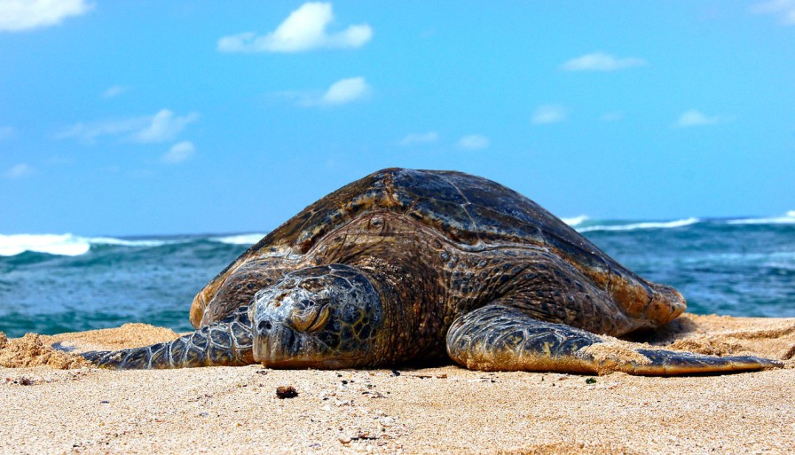
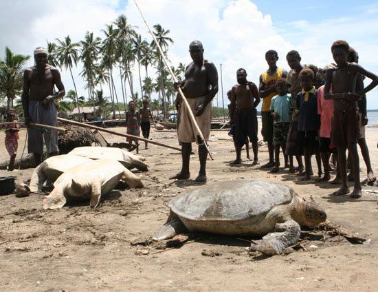
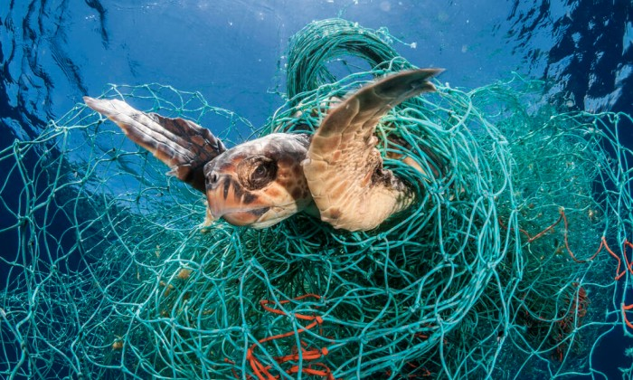

Sea turtles must overcome numerous risks to their survival in the wild. Raccoons, crabs, and ants are a few predators that prey on eggs and hatchlings that are still in the nest. Hatchlings make bite-sized meals for birds, crabs, and a variety of saltwater predators as they emerge. Except for the occasional shark assault, sea turtles are largely protected from predators once they reach adulthood.
Since this occurs naturally throughout the food chain, commonly known as biodiversity, there is no way to stop it. The injured sea turtles can be saved and given time to recover in sea turtle hatcheries such those in Hikkaduwa, Bentota, Kosgoda, etc.

Beaches are used by sea turtles to lay their eggs, and nearby seas are used for foraging. Sea turtles have fewer options for nesting places and food supplies due to habitat loss and degradation brought on by coastal development, such as beachfront construction.
Conservation efforts can concentrate on safeguarding crucial sea turtle ecosystems, like breeding beaches and foraging grounds, to stop habitat loss. To lessen erosion and human disturbance, this may entail creating marine protected zones, habitat restoration initiatives, and beach management techniques.
.jpg)
There are several ways that climate change may impact sea turtles. The sex ratio of hatchlings can alter as a result of warmer temperatures, with more females hatching from eggs kept at higher temperatures. The distribution and amount of prey can be impacted by variations in ocean currents and temperature, which may have an effect on sea turtle survival.
Conservation efforts can concentrate on lowering greenhouse gas emissions and mitigating the effects of warming waters on sea turtle habitats in order to address the consequences of climate change on sea turtles. This can entail actions like restoring coastal habitat, putting sustainable fishing methods into place, and creating adaptable management plans for sea turtle populations.
For their meat, eggs, and shells, sea turtles are hunted and poached; they are also utilized in traditional medicine. Many sea turtle populations are now endangered or extremely endangered due to overfishing.
Conservation efforts can concentrate on lowering the demand for turtle products, introducing sustainable fishing methods, and enforcing laws and regulations that forbid the capture and trading of sea turtles and their products in order to prevent overexploitation of sea turtles.
Plastic waste can be mistaken for food by sea turtles, which can result in fatal intestinal obstructions. They may also become tangled in abandoned fishing equipment, which may result in harm or even death. Sea turtles may contract illnesses or experience various health issues as a result of polluted water.
Conservation efforts can concentrate on minimizing the use of single-use plastics, implementing correct waste disposal procedures, and supporting laws and programs that support ocean conservation to reduce the detrimental effects of pollution on sea turtle populations.

Fishing nets can entangle sea turtles, and they can also be mistakenly trapped as bycatch, which can result in harm or even death.
The use of Turtle Excluder Devices (TEDs) is one way to lower the amount of fishing gear and bycatch for sea turtles. When sea turtles unintentionally become caught in fishing nets, TEDs are specialized devices that are inserted in the nets and enable sea turtles to escape. According to studies, using TEDs can greatly minimize the amount of sea turtle bycatch in shrimp trawls and other forms of fishing gear.


.png)